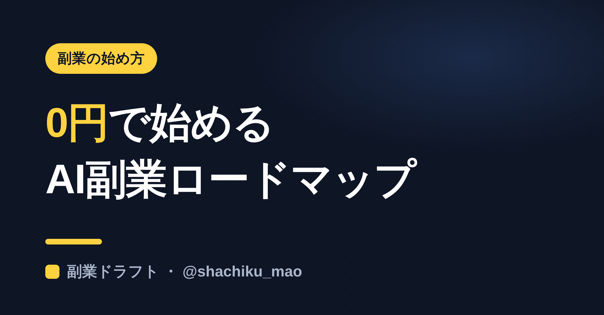
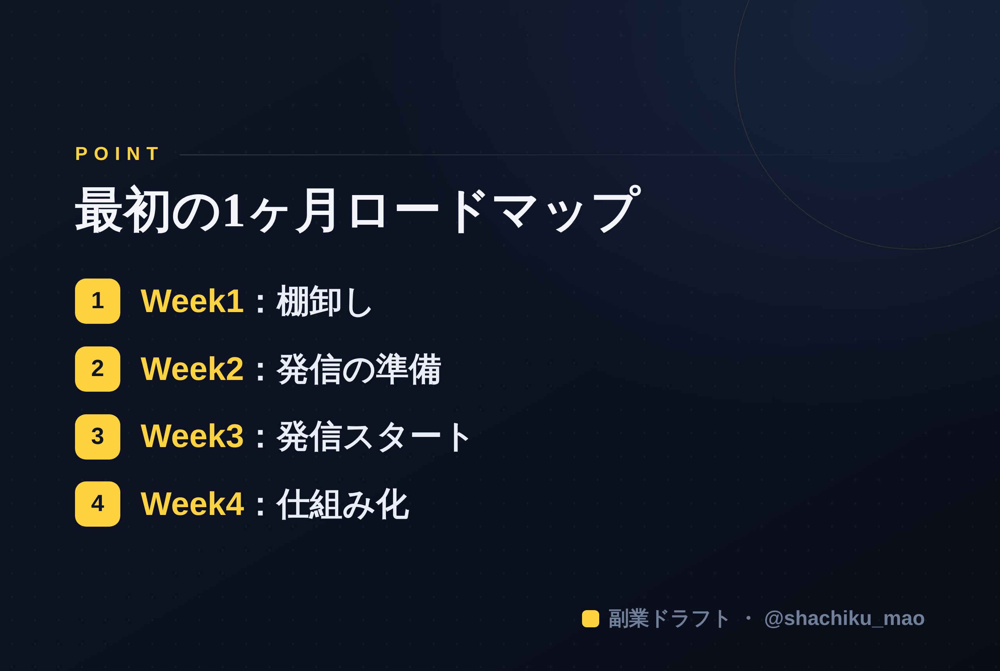

使い方
1. 「タイトルをコピー」→ note のタイトル欄に貼る
2. オレンジのラベルの画像（見出し画像）を note の見出し画像に設定
3. 「本文1をコピー」→ note本文に貼る
4. 青いラベルの位置（本文の途中）に、同じ名前の画像をアップして挿入
5. 「本文2をコピー」→ 続きを貼る
※ 見出しが普通の文字になったら、その行を選んで「大見出し」に設定してください
1. 「タイトルをコピー」→ note のタイトル欄に貼る
2. オレンジのラベルの画像（見出し画像）を note の見出し画像に設定
3. 「本文1をコピー」→ note本文に貼る
4. 青いラベルの位置（本文の途中）に、同じ名前の画像をアップして挿入
5. 「本文2をコピー」→ 続きを貼る
※ 見出しが普通の文字になったら、その行を選んで「大見出し」に設定してください
0円から始めるAI副業｜最初の1ヶ月でやることロードマップ
見出し画像に設定：seo-07.png

「AIで副業を始めたいけど、お金も時間もかけずに、まず何をすればいい？」——そんな人のために、0円で始められる"最初の1ヶ月"のロードマップをまとめました。順番どおりに進めるだけでOKです。
大前提：順番は「言語化 → 発信 → 収益化」
多くの人が「稼ぐ方法探し」や「商品作り」から始めて挫折します。正しい順番は、まず自分の強みを言葉にして、発信で信頼を溜めてから収益化する、です。
Week 1：棚卸し（自分の強みを言葉にする）
- 無料のAI（ChatGPT / Claude）に「私に7つ質問して、強み3つと発信テーマ3つを提案して」と頼む
- 出てきたテーマから、発信の"軸"を1つ決める
ここが全部の土台。焦らず言語化します。
Week 2：発信の準備
- 発信する媒体を決める（初心者はThreadsがおすすめ）
- プロフィールを「肩書き＋誰の役に立つか」で整える
- 1テーマをAIに10分解させて、投稿ネタを10個ストック
Week 3：発信スタート
- 1日1投稿でOK。完璧を目指さず"60点"で出す
- 反応が来たら、丁寧に返信（会話が伸びのカギ）
- 同ジャンルの投稿に、中身のあるコメントをしてみる
Week 4：振り返りと仕組み化
- 伸びた投稿・反応が良かったテーマをメモ
- 週末30分でまとめて下書き→平日は"出すだけ"の仕組みに
- 「続けられそう」を確認できたら、次は収益化を考え始める
この1ヶ月で"かかるお金"は0円
必要なのは、無料のAIとSNSアカウントだけ。最初からお金をかける必要はありません。まずは「自分でも発信できる」を体感することがゴールです。
本文中に挿入：seo-07-body.png（この記事のポイント）

まとめ
- 順番は言語化→発信→収益化
- Week1棚卸し／Week2準備／Week3発信／Week4仕組み化
- 1ヶ月は0円で回せる
※ ここからは宣伝です。 この「棚卸し→発信の下書き」をまとめて手伝うツール「副業ドラフト」を作りました。ヒヤリング・強み棚卸し・Threads3本まで無料で試せます → https://note-threadssf.onrender.com
🎁 1ヶ月の実践で使えるプロンプト集は公式LINEで無料配布中 → https://lin.ee/RzyA13P
役に立ったら、スキ＆フォローで応援してもらえると嬉しいです😊